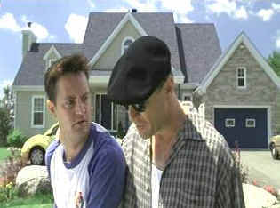

| Whole
Nine Yards (SE)B,B+ |
| Warner/2000/99/ANA
1.85 |
Farce needs consistent rhythms to tickle an audience. Actors must keep control
of the giggle monster inside them threatening to get loose. It's okay if you sense they are having
a fine old time, as long as they stay within their characters. A good comic director fine tunes
rhythms and has a fine old time himself. When Jonathan Lynn is on, his comedies strike the right
note and he's on in The Whole Nine Yards.
The Whole Nine Yards kept me giggling
pretty consistently. I do not love Bruce Willis in his precious mode, which is close to the way it
is here, but the ensemble work, especially Matthew Perry and Amanda Peet, is very good. Jonathan
Lynn is excellent at keeping the hilarity on target. You will have to keep your knees braced for
Rosanna Arquette's Sophie.
"Oz" Oseransky is in a marriage from Hell. His slothful wife
badgers him endlessly and his mother-in-law is like a baying dog at his heels. Oz suffers the
arrows of outrageous marriage and commutes daily from the plastic suburbs of Montreal to his dental
office in the city. Change enters the land of Oz when Jimmy "The Tulip" Tudeski moves in
next door. Tudeski, the notorious hit man, and Oz form a bond as hard as tooth enamel, forged on
fear and change. Add to the comic delights a devious dental assistant and the hit man's long-legged
wife and it makes for a quartet of comic laughter.
Lynn's script serves up a tasty concept and ripe
characters. When Oz leaves for leaves for work saying "You ladies have a lovely day,"
wife Sophie's tart retort "I would, if you do me a favor and die," is perfect. The
delivery and situation are perfectly mated and Perry's frustration with his wife and mother-in-law
set the wink-in-the-eye tone of The Whole Nine Yards.
 |
|
Good neighbor policy. ©Warner |
Warner delivers The Whole Nine Yards
as a special edition featuring audio commentary by director Jonathan Lynn. He points out the many
wonderful and inventive moments that Matthew Perry brought to the film. Lean and direct
observations illuminate the film. I like the technical details he explains, especially the montage
of newspaper and magazines. Lynn points out many of the ad-libs when actors add to the texture of
the film. Lynn was brought into the project by Willis. There's also an "interview
gallery" with the cast, but it's fairly standard stuff.
This is a very colorful transfer. Bright hues work for the thematic material and
are tightly contained within their respective boundaries. Resolution is mostly sharp and image is
free of unwanted noise. Skin tones are varied nicely and blacks are thick without being compressed.
Randy Edelman knows how to deliver wry in his scores and the DVD does an excellent job of balancing
music, dialogue and ambiance.
.
|
|

Check out these DVD recommendations from the Films on Disc DVD
Review Archive. New releases are constantly in our face, but catalog gems should not be forgotten.

Selections from the feature archive include articles on Akira Kurosawa,
Frank Darabont, Blonde Bimbos, Hollywood
Street Gangs, or Vietnam:
The Hollywood Pariah, and many more....
Sturges Emerges
Preston Sturges was Hollywood's resident comic genius for more than a decade. His movies are
timeless. Click on his image to read all about it.


Elegant DVD portal with news, reviews, links and information
galore.

Home Vision Cinema
Classic and foreign motion pictures on VHS tape. The title
selection is excellent and informative essays are provided for many of the films.
|